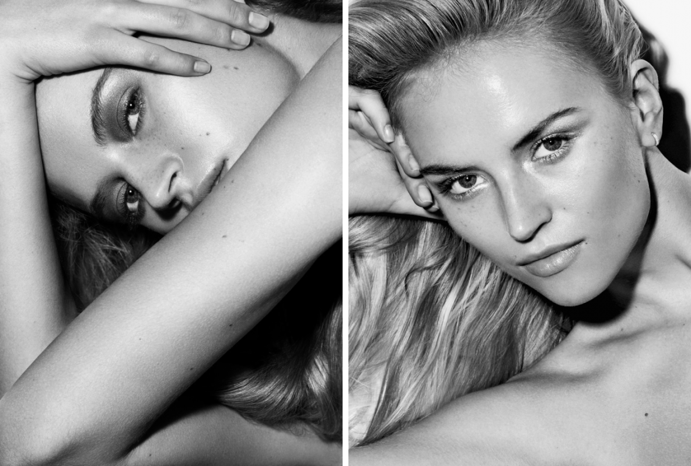

Contato
Anna Bella Geiger (Rio de Janeiro, Rio de Janeiro, 1933). Escultora, pintora, gravadora, desenhista, artista intermídia e professora. Com formação em língua e literatura anglo-germânicas, inicia, na década de 1950, seus estudos artísticos no ateliê de Fayga Ostrower (1920-2001). Em 1954, vive em Nova York, onde freqüenta as aulas de história da arte com Hannah Levy no The Metropolitan Museum of Art (MET) [Museu Metropolitano de Arte] e, como ouvinte, cursos na New York University. Retorna ao Brasil no ano seguinte. Entre 1960 e 1965, participa do ateliê de gravura em metal do Museu de Arte Moderna do Rio de Janeiro (MAM/RJ), onde passa a lecionar três anos mais tarde.
Telefone:(61) 996386933